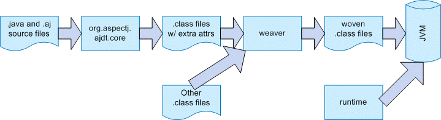
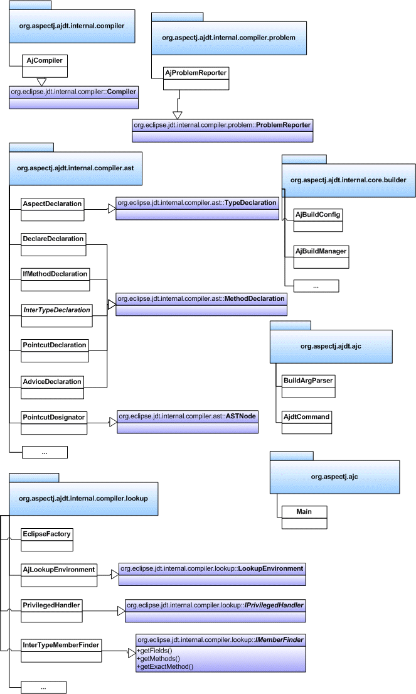

This document is written for developers who want to understand the implementation of AspectJ. It provides a top-down picture of the compiler and weaver implementations. This high-level picture should make it easier to read and understand the source code for AspectJ.
The AspectJ compiler/weaver (ajc) is composed of three primary modules.

The AspectJ compiler accepts both AspectJ bytecode and source code and produces pure Java bytecode as a result. Internally it has two stages. The front-end (org.aspectj.ajdt.core) compiles both AspectJ and pure Java source code into pure Java bytecode annotated with additional attributes representing any non-java forms such as advice and pointcut declarations. The back-end of the AspectJ compiler (weaver) implements the transformations encoded in these attributes to produce woven class files. The back-end can be run stand-alone to weave pre-compiled aspects into pre-compiled .jar files. In addition, the back-end exposes a weaving API which can be used to implement ClassLoaders that will weave advice into classes dynamically as they are loaded by the virtual machine.
The front-end of the AspectJ compiler is implemented as an extension of the Java compiler from eclipse.org. The source-file portion of the AspectJ compiler is made complicated by inter-type declarations, declare parents, declare soft, and privileged aspects. All of these constructs require changes to the underlying compiler to modify Java’s name-binding and static checking behavior.
As the compiler extends the jdt.core compiler, the package structure of this module mimics that of the jdt.core module. The design works hard to minimize the set of changes required to org.eclipse.jdt.core because a fun 3-way merge is required each time we want to move to a new underlying version of this code. The ultimate goal is to contribute all of our changes to jdt.core back into the main development branch some day.
The basic structure of a compile is very simple:
Let's trace the following example program through the compiler.
package example.parse.tree;
import org.aspectj.lang.*;
public class Main {
public static void main(String[] args) {
new Main().doit();
}
private void doit() {
System.out.println("hello");
}
}
aspect A {
pointcut entries(Main o): execution(void doit()) && this(o);
before(Main o): entries(o) {
o.counter++;
System.out.println("entering: " + thisJoinPoint);
}
private int Main.counter = 0;
}
When parsed, this program will produce the following tree.
Let's look more closely at the pointcut declaration:
pointcut entries(Main o): execution(void doit()) && this(o);

The pointcut declaration is implemented as a subtype of a method declaration. The actual pointcut is parsed by the weaver module. This parsing happens as part of the shallow parse phase. This is because this information might be needed to implement a declare soft.
Next we look at the processing for an advice declaration:
before(Main o): entries(o) {
o.counter++;
System.out.println("entering: " + thisJoinPoint);
}
After parsing, the AdviceDeclaration.postParse method will be called to make this a valid MethodDeclaration so that the standard eclipse code for analyzing a method body can be applied to the advice. After postParse, the selector is filled in and several additional arguments are added for the special thisJoinPoint forms that could be used in the body.

At this point the statements field which will hold the body of the advice is still null. This field is not filled in until the second stage of the compiler when full parsing is done on each source file as a prelude to generating the classfile.
The main classes in this module are shown in the following diagram:

This provides all of the weaving functionality. It has very few dependencies to keep the code as small as possible for deployment in load-time weavers - only asm, bridge and util which are each very small modules with no further dependencies. This also depends on a patched version of the bcel library from apache.org. The patches are only to fix bcel bugs that can't be worked around in any other way.
There are only four packages in this system.
The back-end of the AspectJ compiler instruments the code of the system by inserting calls to the precompiled advice methods. It does this by considering that certain principled places in bytecode represent possible join points; these are the “static shadow” of those join points. For each such static shadow, it checks each piece of advice in the system and determines if the advice's pointcut could match that static shadow. If it could match, it inserts a call to the advice’s implementation method guarded by any dynamic testing needed to ensure the match.
This library provides classes that are used by the generated code at runtime. These are the only classes that must be redistributed with a system built using AspectJ. Because these classes are redistributed this library must always be kept as small as possible. It is also important to worry about binary compatibility when making changes to this library. There are two packages that are considered public and may be used by AspectJ programs.
There are also several packages all under the header org.aspectj.runtime that are considered private to the implementation and may only be used by code generated by the AspectJ compiler.
| org.aspectj.ajdt.internal.compiler | weaver - org.aspectj.weaver. | |
| aspect | ast.AspectDeclaration | CrosscuttingMembers |
| advice | ast.AdviceDeclaration | Advice + bcel.BcelShadowMunger |
| pointcut declaration | ast.PointcutDeclaration | ResolvedPointcutDefinition |
| declare error/warning | ast.DeclareDeclaration | Checker + patterns.DeclareErrorOrWarning |
| declare soft | ast.DeclareDeclaration + problem.AjProblemReporter | Advice (w/ kind = Softener) + patterns.DeclareSoft |
| declare parents | ast.DeclareDeclaration + lookup.AjLookupEnvironment | patterns.DeclareParents + NewParentTypeMunger |
| inter-type decls | ast.InterType*Declaration + lookup.InterType*Binding + lookup.AjLookupEnvironment | New*TypeMunger + bcel.BcelTypeMunger |
| if pcd | ast.IfPseudoToken + ast.IfMethodDeclaration | patterns.IfPointcut |
| pcd | ast.PointcutDesignator | patterns.Pointcut hierarchy |
This tutorial will walk step-by-step through the process of adding a new join point to AspectJ for the moment when an exception is thrown. In Java source code, the shadow of this point is a throw statement. In Java bytecode, the shadow is the athrow instruction.
This tutorial is recommended to anyone who wants to get a better feel for how the implementation of AspectJ really works. Even if you're just working on a bug fix or minor enhancement, the process of working with the AspectJ implementation will be similar to that described below. The size of your actual code changes will likely be smaller, but you are likely to need to be familiar with all of the pieces of the implementation described below.
The first part of this tutorial will implement the main features of the throw join point. We will create a new join point shadow corresponding to the athrow instruction and also create a new pointcut designator (pcd) for matching it.
Do a Team->Synchronize With Repository and make sure that your tree is completely in sync with the existing repository. Make sure to address any differences before moving on.
Run the existing test suite. I currently do this in four steps:
There should be no failures when you run these tests. If there are failures, resolve them with the AspectJ developers before moving on.
a. Create a new file in tests/design/pcds/Throw.java
import org.aspectj.testing.Tester;
public class Throws {
public static void main(String[] args) {
try {
willThrow();
Tester.checkFailed("should have thrown exception");
} catch (RuntimeException re) {
Tester.checkEqual("expected exception", re.getMessage());
}
}
static void willThrow() {
throw new RuntimeException("expected exception");
}
}
aspect A {
before(): withincode(void willThrow()) {
System.out.println("about to execute: " + thisJoinPoint);
}
}
b. Create a temporary test harness file to run just this test in myTests.xml
<!DOCTYPE suite SYSTEM "../tests/ajcTestSuite.dtd">
<suite>
<ajc-test dir="design/pcds"
title="simple throw join point">
<compile files="Throws.java" />
<run class="Throws"/>
</ajc-test>
</suite>
c. Run this test using the harness. You should see:
about to execute: execution(void Throws.willThrow()) about to execute: call(java.lang.RuntimeException(String)) PASS Suite.Spec(c:\aspectj\eclipse\tests) 1 tests (1 passed) 2 seconds
Modify runtime/org.aspectj.lang/JoinPoint.java to add a name for the Throw shadow kind.
static String THROW = "throw";
Modify weaver/org.aspectj.weaver/Shadow.java to add the Throw shadow kind. This adds a static typesafe enum for the Throw Kind. The constructor uses the name from the runtime API to ensure that these names will always match. The '12' is used for serialization of this kind to classfiles and is part of the binary API for aspectj. The final 'true' indicates that this joinpoint has its arguments on the stack. This is because the throw bytecode in Java operates on a single argument that is a Throwable which must be the top element on the stack. This argument is removed from the stack by the bytecode.
public static final Kind Throw = new Kind(JoinPoint.THROW, 12, true);
We also modify the neverHasTarget method to include the Throw kind because in Java there is no target for the throwing of an exception.
public boolean neverHasTarget() {
return this == ConstructorCall
|| this == ExceptionHandler
|| this == PreInitialization
|| this == StaticInitialization
|| this == Throw;
}
In the read method on Shadow.Kind, add another case to read in our new Shadow.Kind.
case 12: return Throw;
Modify weaver/org.aspectj.weaver.bcel/BcelClassWeaver.java to recognize this new joinpoint kind. In the method
private void match(
LazyMethodGen mg,
InstructionHandle ih,
BcelShadow enclosingShadow,
List shadowAccumulator)
{
Add a test for this instruction, i.e.
} else if (i == InstructionConstants.ATHROW) {
match(BcelShadow.makeThrow(world, mg, ih, enclosingShadow),
shadowAccumulator);
}
Then, modify BcelShadow.java to create this new kind of join point shadow:
public static BcelShadow makeThrow(
BcelWorld world,
LazyMethodGen enclosingMethod,
InstructionHandle throwHandle,
BcelShadow enclosingShadow)
{
final InstructionList body = enclosingMethod.getBody();
TypeX throwType = TypeX.THROWABLE; //!!! not as precise as we'd like
TypeX inType = enclosingMethod.getEnclosingClass().getType();
BcelShadow s =
new BcelShadow(
world,
Throw,
Member.makeThrowSignature(inType, throwType),
enclosingMethod,
enclosingShadow);
ShadowRange r = new ShadowRange(body);
r.associateWithShadow(s);
r.associateWithTargets(
Range.genStart(body, throwHandle),
Range.genEnd(body, throwHandle));
retargetAllBranches(throwHandle, r.getStart());
return s;
}
Finally modify weaver/org.aspectj.weaver/Member.java to generate the needed signature
public static Member makeThrowSignature(TypeX inType, TypeX throwType) {
return new Member(
HANDLER,
inType,
Modifier.STATIC,
"throw",
"(" + throwType.getSignature() + ")V");
}
Run the proto test again and you should see:
about to execute: execution(void Throws.willThrow()) about to execute: call(java.lang.RuntimeException(String)) about to execute: throw(catch(Throwable)) PASS Suite.Spec(c:\aspectj\eclipse\tests) 1 tests (1 passed) 3 seconds
That last line shows the 'throw(catch(Throwable))' join point. This is a slightly confusing string form, but it is the first sign of our brand new join point. The reason for the weird 'catch(Throwable)' part is that we used Member.HANDLER for the kind of the signature of this join point. That's clearly not correct. We'll fix that at the end of the lesson as part of the clean-up. For now, let's go on with the interesting parts.
Add a second piece of before advice to the test aspect A:
before(): throw(Throwable) {
System.out.println("about to throw: " + thisJoinPoint);
}
When we run the test again we'll get a long error message from the harness. The interesting part of the message is the following:
[ 0] [error 0]: error can't find referenced pointcut at C:\aspectj\eclipse\tests\design\pcds\Throws.java:23:0
This error is not quite what you might have expected. You might have hoped for a syntax error saying that there is not 'throw' pointcut designator defined. Unfortunately, this is a weakness in the syntax of AspectJ where primitive PCDs and named PCDs have the same syntax, so the compiler can't tell the difference between a misspelled or non-existent primitive PCD and a named PCD reference that is missing. This also has some impact on extending the primitive PCDs because it will break existing programs. In this case, when we add the throw PCD we will break any existing programs that use throw as the name for a user-defined PCD. Fortunately because throw is a Java keyword this particular change is very safe.
Modify the parseSinglePointcut method in weaver/org.aspectj.weaver.patterns/PatternParser.java to add one more else if clause for the throw pcd:
} else if (kind.equals("throw")) {
parseIdentifier(); eat("(");
TypePattern typePat = parseTypePattern();
eat(")");
return new KindedPointcut(Shadow.Throw,
new SignaturePattern(Member.HANDLER, ModifiersPattern.ANY,
TypePattern.ANY, TypePattern.ANY, NamePattern.ANY,
new TypePatternList(new TypePattern[] {typePat}),
ThrowsPattern.ANY));
Modify the matches method in weaver/org.aspectj.weaver.patterns/SignaturePattern.java to add:
if (kind == Member.HANDLER) {
return parameterTypes.matches(world.resolve(sig.getParameterTypes()),
TypePattern.STATIC).alwaysTrue();
}
Run the proto test again and you should see:
about to execute: execution(void Throws.willThrow()) about to execute: call(java.lang.RuntimeException(String)) about to execute: throw(catch(Throwable)) about to throw: throw(catch(Throwable)) PASS Suite.Spec(c:\aspectj\eclipse\tests) 1 tests (1 passed) 1 secondsMake sure that you see the 'about to throw' printed before moving on. This shows that the throw PCD is now successfully matching the throw join point shadow we added earlier.
Now that we have a valid pcd for this advice, we can simplify our test case. Modify our test aspect A to be the following. In addition to removing the overly generic withincode pcd, this change also prints the actual object that is about to be thrown:
aspect A {
before(Throwable t): throw(*) && args(t) {
System.out.println("about to throw: '" + t+ "' at " + thisJoinPoint);
}
}
When we run the test again we should see the output below:
about to throw: 'java.lang.RuntimeException: expected exception' at throw(catch(Throwable)) PASS Suite.Spec(c:\aspectj\eclipse\tests) 1 tests (1 passed) 1 seconds
Congratulations! You've just implemented the throw join point and PCD. This code isn't yet ready to be checked into any repository. It still has some rough edges that need to be smoothed. However, you've now added a new join point to the AspectJ language and a corresponding PCD to match it. This is a good time to take a break before moving on to part two.
We know that throw(catch(Throwable)) is not the right thing to be printing for the signature at this join point. What is the correct signature? At the beginning of the tutorial, we explained that the preferred design for the pcd was to have throw(StaticTypeOfExceptionThrown). In step 4, we set the type of the exception thrown to be 'Throwable'. Can we set this to be more accurate? Looking at the source code, it seems easy to identify the static type of the exception that is thrown:
throw new RuntimeException("expected exception");
In the source code to a Java program there is a well-defined static type for the exception that is thrown. This static type is used for various stages of flow analysis to make sure that checked exceptions are always correctly handled or declared. The ThrowStatement class in our own compiler has a special field for exceptionType that stores the static type of the exception thrown. Unfortunately, this static type is much harder to recover from the corresponding bytecode. In this case we would need to do flow analysis to figure out what the static type is for the object on the top of the stack when the athrow instruction executes. This analysis can certainly be done. In fact this analysis is a small part of what every JVM must do to verify the type safety of a loaded classfile.
However, the current AspectJ weaver doesn't do any of this analysis. There are many good reasons to extend it in this direction in order to optimize the code produced by the weaver. If we were really implementing this feature, this would be the time for a long discussion on the aspectj-dev list to decide if this was the right time to extend the weaver with the code flow analysis needed to support a static type for the throw join point. For the purposes of this tutorial, we're going to assume that it isn't the right time to do this (implementing flow analysis for bytecodes would add another 50 pages to this tutorial). Instead we're going to change the definition of the throw join point to state that its argument always has a static type of Throwable. We still allow dynamic matching in args to select more specific types. In general, good AspectJ code should use this dynamic matching anyway to correspond to good OO designs.
Since we aren't going to recover the static type of the exception thrown, we need to fix the parser for the throw pcd to remove this information. We'll fix the PatternParser code that we added in step 1.6 to read as follows:
} else if (kind.equals("throw")) {
parseIdentifier(); eat("(");
eat(")");
return new KindedPointcut(Shadow.Throw,
new SignaturePattern(Member.THROW, ModifiersPattern.ANY,
TypePattern.ANY, TypePattern.ANY, NamePattern.ANY,
TypePatternList.ANY,
ThrowsPattern.ANY));
Notice that this code also starts to fix the member kind to be Member.THROW instead of the bogus Member.HANDLER that we were using before. To make this work we have a set of things to do. First, let's create this new kind in org.aspectj.weaver.Member. Find where the HANDLER kind is defined there, and add a corresponding throw kind:
public static final Kind THROW = new Kind("THROW", 8);
We also need to fix the serialization kind in Member.Kind.read(DataInputStream) just above this constant list to add a case for this new kind:
case 8: return THROW;
Still in this file, we also need to fix Member.makeThrowSignature to use this new kind:
public static Member makeThrowSignature(TypeX inType, TypeX throwType) {
return new ResolvedMember(
THROW,
inType,
Modifier.STATIC,
"throw",
"(" + throwType.getSignature() + ")V");
}
If you run the test now you'll get an error from the parser reminding us that the throw pcd now doesn't accept a type pattern:
------------ FAIL: simple throw join point() ... C:\aspectj\eclipse\tests\design\pcds\Throws.java:19:0 Syntax error on token "*", ")" expected FAIL Suite.Spec(c:\aspectj\eclipse\tests) 1 tests (1 failed) 1 seconds
This is an easy fix to the test case as we modify our pcd for the new syntax in the aspect A in our Throws.java test code:
before(Throwable t): throw() && args(t) {
Now when we run the test case it looks like everything's fixed and we're passing:
PASS Suite.Spec(c:\aspectj\eclipse\tests) 1 tests (1 passed) 2 seconds
The pass result from running our test should worry you. Unlike previous runs, this test run doesn't show the output from our System.out.println in the before advice. So, it's clear this advice is not running. The problem is that even though the advice is not running, the test case is passing. We need to make this a real test case to fix this. We'll do that by adding code that notes when the advice runs and then checks for this event. This code uses the Tester.event and Tester.checkEvent methods:
import org.aspectj.testing.Tester;
public class Throws {
public static void main(String[] args) {
try {
willThrow();
Tester.checkFailed("should have thrown exception");
} catch (RuntimeException re) {
Tester.checkEqual("expected exception", re.getMessage());
}
Tester.checkEvents(new String[] { "before throw" });
}
static void willThrow() {
throw new RuntimeException("expected exception");
}
}
aspect A {
before(Throwable t): throw() && args(t) {
Tester.event("before throw");
//System.out.println("about to throw: '" + t+ "' at " + thisJoinPoint);
}
}
Now when we run our test case it will fail. This failure is good because we're not matching the throw join point anymore.
------------ FAIL: simple throw join point() ... [ 1] [fail 0]: fail [ expected event "before throw" not found] FAIL Suite.Spec(c:\aspectj\eclipse\tests) 1 tests (1 failed) 1 seconds
In org.aspectj.weaver.patterns.SignaturePattern.matches, we need to handle throw signature matching the same way we handle advice signature matching. Both of these pcds match solely on the kind of join point and use combinations with other pcds to narrow their matches. So, find the line for kind == Member.ADVICE and add the same line below it for Member.THROW.
if (kind == Member.ADVICE) return true; if (kind == Member.THROW) return true;
This change will make our test case pass again. Run it to be sure.
There's an interesting tension between a good automated test and a good test for development. Our new test case now correctly includes an automated test to let us know when we are and are not matching the new throw join point. However, without the println the test doesn't feel as satisfactory to me to run during development. I often like to turn this kind of printing back on the see what's happening. If you uncomment to System.out.println in the test aspect A and rerun the test, you won't be very happy with the results:
------------ FAIL: simple throw join point()
...
unimplemented
java.lang.RuntimeException: unimplemented
at org.aspectj.weaver.Member.getSignatureString(Member.java:596)
...
FAIL Suite.Spec(c:\aspectj\eclipse\tests) 1 tests (1 failed) 1 seconds
It looks like there's more work to do to add the new member kind for Member.THROW. This problem only shows up when we try to print thisJoinPoint. It's showing that we haven't updated the reflection API to understand this new signature kind.
We need to add a couple of classes to the reflection API to implement the throw signature. Because we decided at the beginning of this section to not include the static type of the exception thrown in the throw signature, these classes are extremely simple. Nevertheless, we have to build them. Notice that when we add new source files to the system we need to include the standard eclipse EPL license header.
/* *******************************************************************
* Copyright (c) 2006 Contributors.
* All rights reserved.
* This program and the accompanying materials are made available
* under the terms of the Eclipse Public License v1.0
* which accompanies this distribution and is available at
* http://www.eclipse.org/legal/epl-v10.html
*
* Contributors:
* Jim Hugunin initial implementation
* ******************************************************************/
package org.aspectj.lang.reflect;
import org.aspectj.lang.Signature;
public interface ThrowSignature extends Signature { }
/* *******************************************************************
* Copyright (c) 2006 Contributors.
* All rights reserved.
* This program and the accompanying materials are made available
* under the terms of the Eclipse Public License v1.0
* which accompanies this distribution and is available at
* http://www.eclipse.org/legal/epl-v10.html
*
* Contributors:
* Jim Hugunin initial implementation
* ******************************************************************/
package org.aspectj.runtime.reflect;
import org.aspectj.lang.reflect.ThrowSignature;
class ThrowSignatureImpl extends SignatureImpl implements ThrowSignature {
ThrowSignatureImpl(Class declaringType) {
super(0, "throw", declaringType);
}
ThrowSignatureImpl(String stringRep) {
super(stringRep);
}
String toString(StringMaker sm) {
return "throw";
}
}
To finish up our work in the runtime module, we need to extend org.aspectj.runtime.reflect.Factory to add a factory method for this new signature kind:
public ThrowSignature makeThrowSig(String stringRep) {
ThrowSignatureImpl ret = new ThrowSignatureImpl(stringRep);
ret.setLookupClassLoader(lookupClassLoader);
return ret;
}
We're not done yet. We still need to fix up the org.aspectj.weaver.Member class to use these new methods and types and fix the unimplemented exception that started us down this road in the first place. First let's add a method to create a string for the throw signature. This is a very simple method copied from the other create*SignatureString methods.
private String getThrowSignatureString(World world) {
StringBuffer buf = new StringBuffer();
buf.append('-'); // no modifiers
buf.append('-'); // no name
buf.append(makeString(getDeclaringType()));
buf.append('-');
return buf.toString();
}
Now we need to modify three methods to add cases for the new Member.THROW kind. First, Member.getSignatureMakerName add:
} else if (kind == THROW) {
return "makeThrowSig";
Next, to Member.getSignatureType add:
} else if (kind == THROW) {
return "org.aspectj.lang.reflect.ThrowSignature";
Finally, to Member.getSignatureString add:
} else if (kind == THROW) {
return getThrowSignatureString(world);
With all of these changes in place we should have working code for thisJoinPoint reflection using our new join point and signature kinds. Rerun the test to confirm:
about to throw: 'java.lang.RuntimeException: expected exception' at throw(throw) PASS Suite.Spec(c:\aspectj\eclipse\tests) 1 tests (1 passed) 1 seconds
Modify the before advice to include at least minimal checks of the new reflective information:
before(Throwable t): throw() && args(t) {
Tester.event("before throw");
Tester.checkEqual(thisJoinPoint.getSignature().toShortString(), "throw");
Tester.checkEqual(t.getMessage(), "expected exception");
}
As usual, you should rerun the tests and make sure they pass.
With these changes to the reflection code, it looks like we have a working version of the throw join point and there are no obvious pieces that we've skipped. Take a break before proceeding to the final phase of tests.
Now it's time to get a decent testing story. The test work that we will do here is probably too little for adding a new join point to the aspectj language; however, it should at least give you a sense of what's involved.
Rerun the tests you ran at the beginning of part 1. Any failures that occur should be resolved at this point. At the time of writing this tutorial, I found 31 failures in the BcWeaverModuleTests. These failures are for all of the test cases that check the exact set of shadows produces by a given program. These test cases need to be updated based on the new join point we're adding. These particular test cases will probably be removed from the AspectJ test suite very soon because they've shown themselves to be very fragile over time and they often break for changes that are not introducing new bugs. However, you should be aware of this kind of failure because you may find it in other unit tests.
You should expect to see at least one other test case fail when you run ajcTests.xml. Here's the failure message:
------------ FAIL: validate (enclosing) join point and source locations() ... [ 1] [fail 0]: fail [ unexpected event "before AllTargetJoinPoints throw(throw)" found]
Most of this message can be ignored. To find out what went wrong you should look for messages that have "fail" in them. The last line tells you what happened. There was an unexpected event, "before AllTargetJoinPoints throw(catch(Throwable))". This is the signature for one of the new throw join points that we added in part 1. How could an existing test case match this new join point? The failing test case uses 'within(TargetClass)' to collect information about ALL join points that are lexically within a given class. Whenever we add a new kind of join point to the language we will extend the set of points matched by pcds like within. This means that these changes need to be very prominently noted in the release notes for any AspectJ release. Since we're not writing documentation in this tutorial, we will move on an fix the test case.
Now we need to fix this failing test case. The first step is to copy the test specification into our local myTests.xml file. The easiest way to do this is to copy the title of the failing test from the output buffer, then open ajcTests.xml and use find to search for this title. Then copy the xml spec for this one test into myTests.xml. Finally, run myTests.xml to make sure you got the failing test. You should see the same failure as before in step 1, but you should see it a lot faster because we're only running 2 tests.
To fix the test we need to find the source code. If you look at the test specification, you can see that the source file is the new directory with the name NegativeSourceLocation.java. Looking at the bottom of this file, we see a large list of expected events. These are the join points that we expect to see. If we look back up in TargetClass, we can see that the only occurence of throw is just before the handler for catch(Error) and right after the call to new Error. We should add our new expected event between these two:
, "before AllTargetJoinPoints call(java.lang.Error(String))" , "before AllTargetJoinPoints throw(throw)" // added for new throw join point , "before AllTargetJoinPoints handler(catch(Error))"
Run the test suite again to see that this test now passes.
There is a lot we should do now to extend test coverage for this new kind of join point. For the purpose of this tutorial, we're just going to make sure that the new join point kind is compatible with all 5 kinds of advice. Let's extend our current simple Throws test to check for before and the three kinds of after advice:
import org.aspectj.testing.Tester;
public class Throws {
public static void main(String[] args) {
try {
willThrow(true);
Tester.checkFailed("should have thrown exception");
} catch (RuntimeException re) {
Tester.checkEqual("expected exception", re.getMessage());
}
Tester.checkEvents(new String[]
{ "before throw", "after throwing throw", "after throw" });
}
static void willThrow(boolean shouldThrow) {
int x;
if (shouldThrow) throw new RuntimeException("expected exception");
else x = 42;
System.out.println("x = " + x);
}
}
aspect A {
before(Throwable t): throw() && args(t) {
Tester.event("before throw");
Tester.checkEqual(thisJoinPoint.getSignature().toShortString(), "throw");
Tester.checkEqual(t.getMessage(), "expected exception");
}
after() returning: throw() {
Tester.checkFailed("shouldn't ever return normally from a throw");
}
after() throwing(RuntimeException re): throw() {
Tester.event("after throwing throw");
Tester.checkEqual(re.getMessage(), "expected exception");
}
after(): throw() {
Tester.event("after throw");
}
}
Run this test to confirm that it still passes. This is a very nice property of the orthogonality of the implementation of join points and advice. We never had to do any implementation work to make our new join point kind work for before and all three kinds of after advice.
Let's create a new test case to see how this new join point interacts with around advice.
import org.aspectj.testing.Tester;
public class AroundThrows {
public static void main(String[] args) {
try {
willThrow(true);
Tester.checkFailed("should have thrown exception");
} catch (RuntimeException re) {
Tester.checkEqual("expected exception", re.getMessage());
}
}
static void willThrow(boolean shouldThrow) {
int x;
if (!shouldThrow) x = 42;
else throw new RuntimeException("expected exception");
System.out.println("x = " + x);
}
}
aspect A {
void around(): throw() {
System.out.println("about to throw something");
proceed();
}
}
When we run this test case we get a very unpleasant result:
------------ FAIL: simple throw join point with around() ... [ 1] --- thrown java.lang.VerifyError: (class: AroundThrows, method: willThrow signature: (Z)V) Accessing value from uninitialized register 1 ... FAIL Suite.Spec(c:\aspectj\eclipse\tests) 3 tests (1 failed, 2 passed) 3 seconds
A VerifyError at runtime is the second worst kind of bug the AspectJ compiler can produce. The worst is silently behaving incorrectly.
Unfortunately, this VerifyError is either impossible or very hard to fix. Think about what would happen if the around advice body didn't call proceed. In this case the local variable x would in fact be uninitialized. There is another serious language design question here, and for a real implementation this would once again be the time to start a discussion on the aspectj-dev mailing list to reach consensus on the best design. For the purpose of this tutorial we're once again going to make the language design choice that is easiest to implement and press on.
The easiest solution to implement is to prohibit around advice on throw join points. There are already a number of these kinds of rules implemented in the org.aspectj.weaver.Shadow.match(Shadow, World) method. We can add our new rule at the beginning of the if(kind == AdviceKind.Around) block:
} else if (kind == AdviceKind.Around) {
if (shadow.getKind() == Shadow.Throw) {
world.showMessage(IMessage.ERROR,
"around on throw not supported (possibly compiler limitation)",
getSourceLocation(), shadow.getSourceLocation());
return false;
}
Now if we rerun our test we'll see errors telling us that around is prohibited on throw join points:
------------ FAIL: simple throw join point with around() ... [ 0] [error 0]: error at C:\aspectj\eclipse\tests\design\pcds\AroundThrows.java:22 around on throw not supported (possibly compiler limitation) [ 0] [error 1]: error at C:\aspectj\eclipse\tests\design\pcds\AroundThrows.java:16 around on throw not supported (possibly compiler limitation) ... FAIL Suite.Spec(c:\aspectj\eclipse\tests) 3 tests (1 failed, 2 passed) 3 seconds
To finish this test case up we need to modify the specification to be looking for these errors as the correct behavior. This will produce the following specification:
<ajc-test dir="design/pcds"
title="simple throw join point with around">
<compile files="AroundThrows.java">
<message kind="error" line="16"/>
<message kind="error" line="22"/>
</compile>
</ajc-test>
Run myTests.xml one last time to see both tests passing.
You probably want to stop here for the purposes of this tutorial. We've pointed out several language design decisions that would need to be resolved before actually adding a throw join point to AspectJ. Some of those might involve a large amount of additional implementation work. If this was actually going into the tree, it would also be important to add several more test cases exploring the space of what can be done with throw.
Assuming those issues were resolved and you are ready to commit this new feature to the tree there are three steps left to follow: